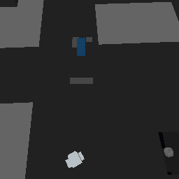

YUREI RESEARCH
YUREI RESEARCHLive multiplayer observation and moving-grid camera tracking
Can Voidwright observe a connected human and a human-driven moving vehicle in a shared Space Engineers world, keep a grid-relative virtual camera attached, and return provenance-bound HoloView captures?
Multiview Cameras 004: live multiplayer observation and moving-grid camera tracking
Research question
Can Voidwright observe a human participant and a human-driven moving vehicle in a shared Space Engineers world, maintain a grid-relative virtual camera, and produce HoloView captures with identifiable fixture, grid, and perspective provenance?
The experiment evaluates bounded, read-only perception integration. It does not evaluate autonomous vehicle control.
Experimental setup
The experiment used an approved disposable V2R3 fixture and a fresh server session. The observed vehicle was the [Voidwright] Blue Utility Truck.
Before the participant joined, a fresh snapshot reported zero connected humans. A grid-relative perspective was established at local offset (right=0, up=12, forward=-6) m relative to the truck. One bounded capture returned a nonblank 256×256 HoloView software render with 203 geometry primitives, 64,256 visible pixels, and 44 visible colors.
Procedure
A single human joined the disposable fixture. Voidwright sampled the participant's anonymous character position, then sampled it again after a brief walk. The participant subsequently drove the Blue Utility Truck and parked it. During the human-driven movement, Voidwright sampled the truck transform, refreshed the same grid-relative perspective, requested bounded HoloView captures, and inspected one grid cell. Codex issued no vehicle actuation.
After the session, a fresh observation confirmed zero connected humans. Only then was the fixture stopped.
Results
Human observation
The same anonymous character was observed before and after the brief walk, with a 4.107 m sample-to-sample displacement.
This establishes a change in observed position, not the exact route, elapsed movement duration, or speed between samples. Associating the anonymous entity with the participant relies on the controlled condition that exactly one human was connected; the export contains no account identity.
Human-driven vehicle movement
The truck moved 26.291 m between the pre-drive and first moving sample, then 61.878 m from the pre-drive baseline to a later parked sample. Its forward axis differed by about 171 degrees. Position changed by less than 0.001 m between the final two samples, consistent with the truck being parked in that interval.
These are differences between sampled transforms. They do not establish a continuous trajectory or total distance driven.
Grid-relative view and structural cross-check
The same grid-relative perspective was used before and after vehicle movement. Its reported world-space position changed with the truck, consistent with the virtual perspective updating with the grid's new transform.
The post-drive 256×256 image had 237 geometry primitives, 64,373 visible pixels, and 72 unique visible colors. The later parked-truck capture had 250 geometry primitives and 65,384 visible pixels. It is included as

This is a saved-grid software render, not a native framebuffer image. The capture was tied to the expected fixture, exporter session, target grid, and perspective.An exact-cell query returned an occupied Neon Tubes Corner block with complete block coverage. This checks exported grid structure; it is not a detailed physics-engine raycast.
Cleanup and regression checks
After the participant disconnected, a fresh observation reported zero connected humans. The fixture then stopped cleanly, with a successful terminal state, zero restarts, and zero fixture edits.
After shutdown, Voidwright.AgentMcpTests passed 19 checks, including synthetic player ambiguity/staleness and grid-relative motion/capture guards. These checks supplement the live trial; they do not add live observations.
Interpretation and limits
The bounded objectives were met: the fixture reported a connected human and changing anonymous character pose, a human-driven truck changed position and orientation, the grid-relative virtual camera updated with the moving grid, and HoloView returned nonblank software-rendered images tied to the expected fixture and perspective.
The captures do not demonstrate player-avatar rendering, terrain rendering, or arbitrary dynamic-scene perception. Structural simulation ticks and renderer counters are different clocks; their values do not establish simultaneous observations. The truck was human-driven, not controlled by Codex. One single-human session does not establish operation with multiple participants, continuous video, or general navigation reliability.
Evidence and reproduction
The underlying timestamped observation ledger, filtered measurements, and terminal receipt are retained with the experiment records. The public image is the only media asset included; raw server logs and machine-local paths are not part of this note. No production world was changed.